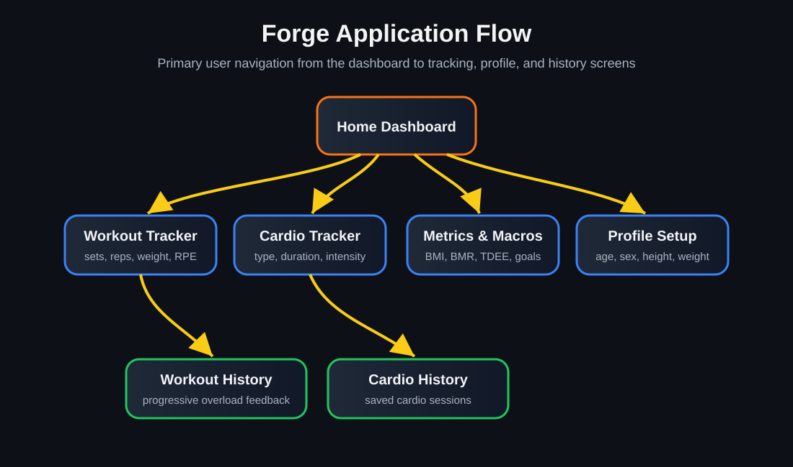
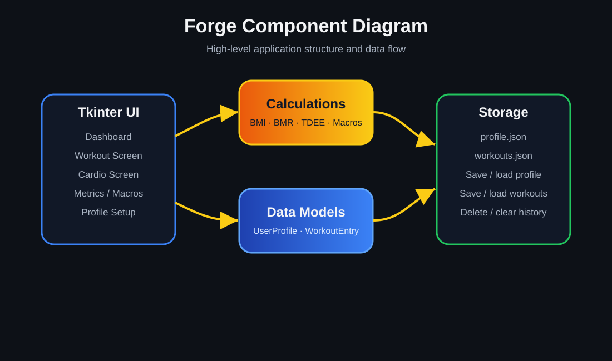
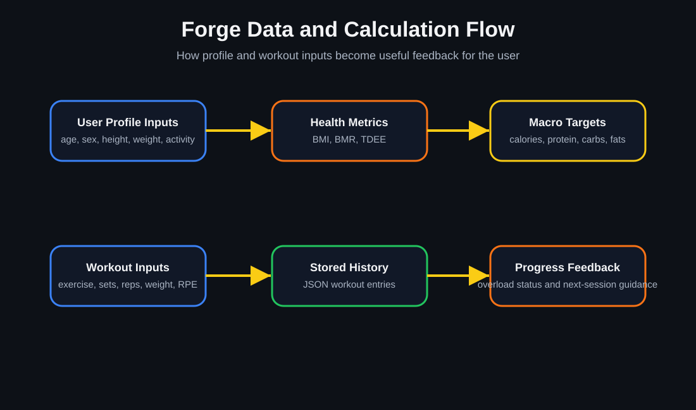
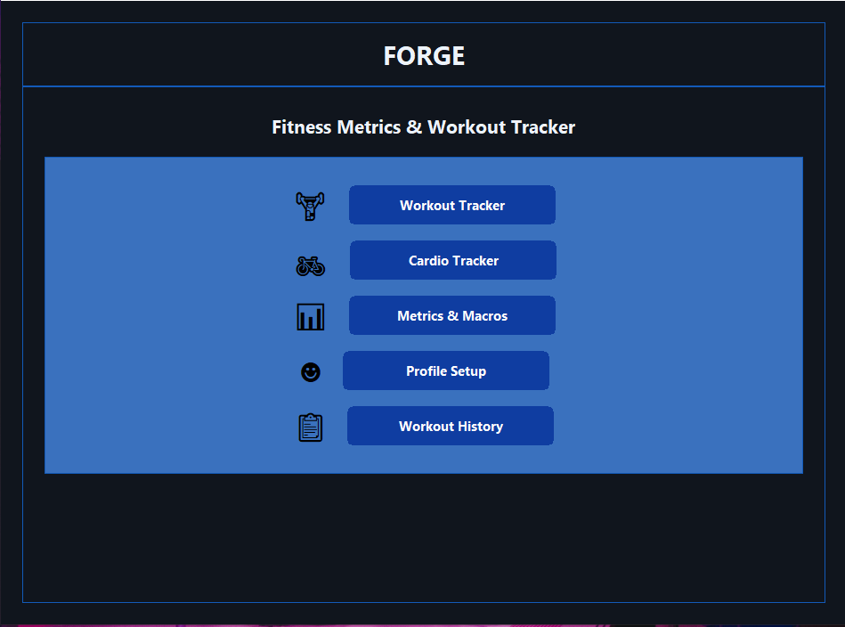
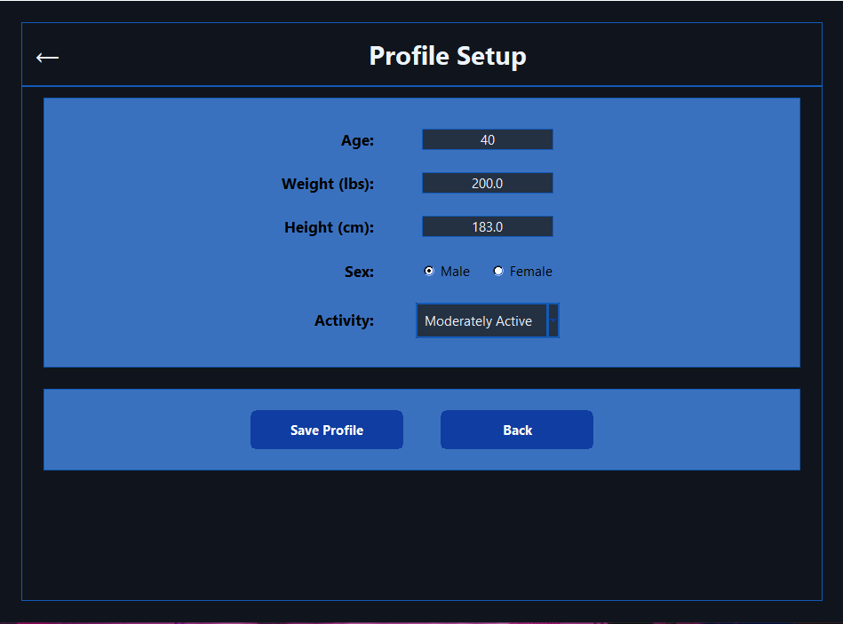
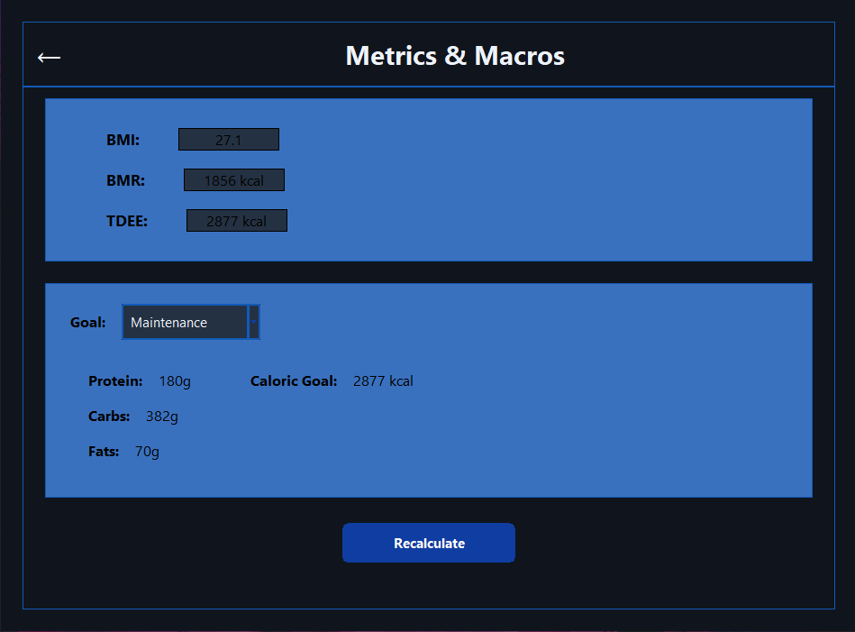
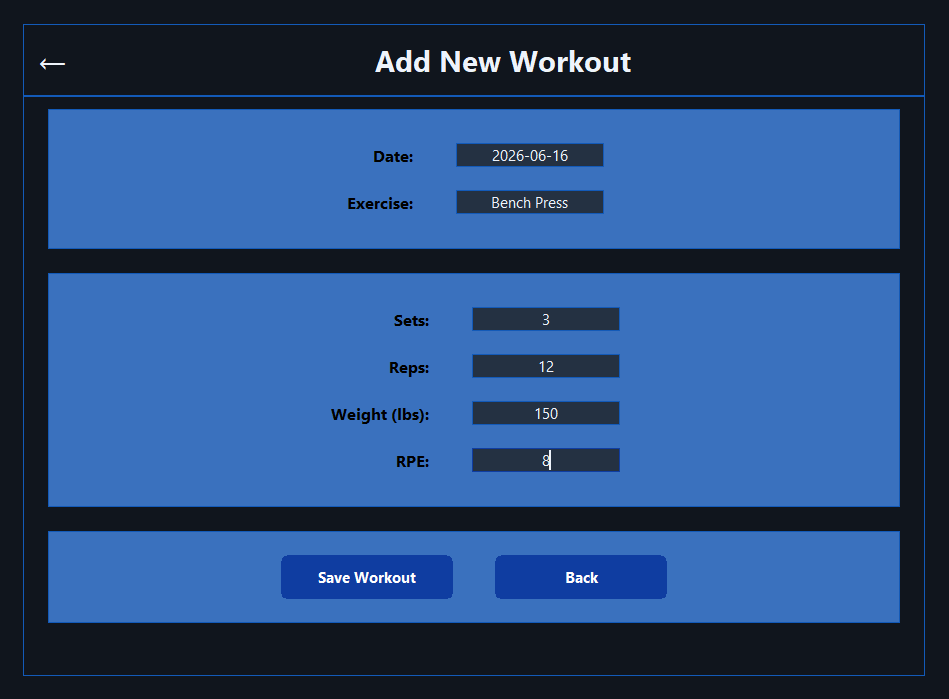
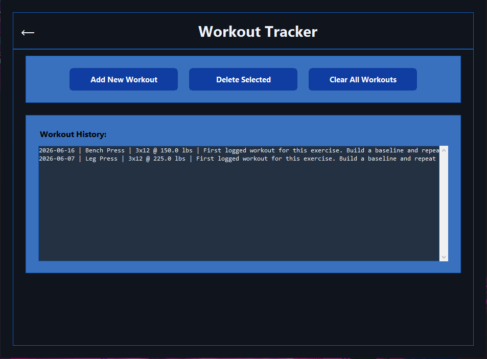
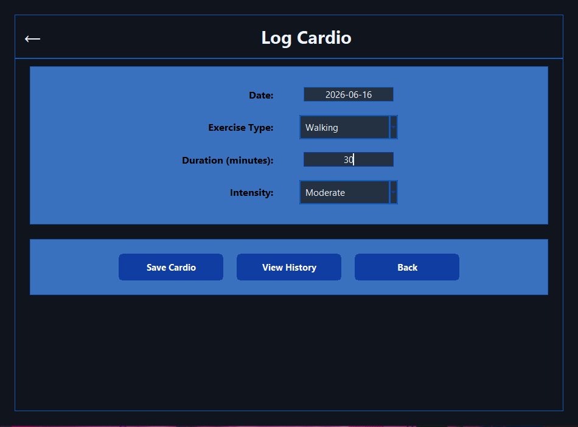
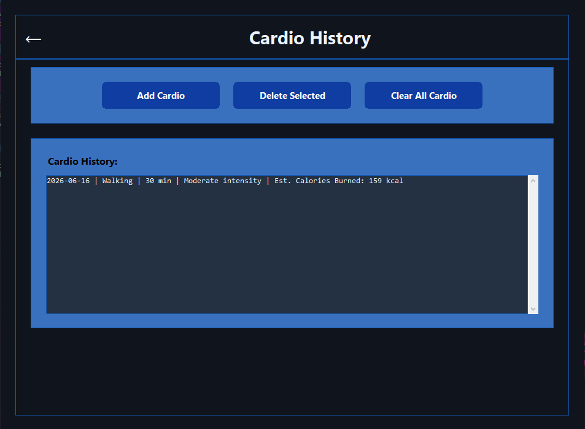

Workout Tracker
Users can log strength workouts by date, exercise, sets, reps, weight, and RPE.
CST-451 / CST-452 Senior Project Portfolio
A Python desktop fitness application for workout logging, cardio tracking, profile-based metrics, macro targets, and progress feedback.
Project Overview
Forge is a desktop fitness metrics and workout tracking application developed as a senior project for CST-451 and CST-452. The application allows users to create a profile, calculate health and nutrition metrics, log strength workouts, record cardio activity, and review saved workout history.
The project demonstrates a complete software development process: planning, implementation, testing, documentation, and final presentation. The final build focuses on a clear Tkinter interface, useful tracking tools, local data persistence, and feedback that helps users evaluate workout progress over time.
Background
Forge was created to provide a simple personal fitness tracking tool that can be run locally without requiring a web account or mobile app. The goal was to build a functional application that supports both workout tracking and profile-based fitness calculations.
The application supports a practical fitness workflow: the user sets up a profile, reviews metrics and macro goals, logs strength workouts or cardio sessions, and checks history to review past activity. This allowed the project to combine user interface design, calculation logic, local storage, testing, and documentation into one complete senior project.
Features
Users can log strength workouts by date, exercise, sets, reps, weight, and RPE.
Forge compares workouts to prior entries and provides progressive overload feedback and next-session recommendations.
Users can record cardio sessions by date, exercise type, duration, and intensity.
The application calculates BMI, BMR, TDEE, calorie goals, and macro targets for cut, bulk, maintenance, and recomp goals.
Users can save profile data such as age, sex, height, weight, and activity level.
Forge includes workout and cardio history screens so users can review, delete, or clear saved entries.
Design Diagrams
These diagrams summarize the major user flows, component structure, and data/calculation flow used in Forge.

Hover or click to enlarge
Hover or click to enlarge
Hover or click to enlargeImplementation
Forge was implemented as a Python desktop application using Tkinter for the user interface. The application is organized around screens for the dashboard, profile setup, metrics and macros, workout logging, workout history, cardio logging, and cardio history.
The project uses data classes to represent user profiles and workout entries, calculation functions for metrics and macros, and JSON-based local storage for saved profile and workout data. The user interface was revised during development to improve readability, navigation, spacing, and overall presentation.
The final implementation plan completed all listed user stories, including profile persistence, BMI/BMR/TDEE calculations, macro targets, workout logging, workout history, progressive overload feedback, cardio tracking, MET-based cardio calorie estimates, and final interface refinements.
Code Snippets
Forge calculates BMI, BMR, TDEE, and macro targets from saved user profile information.
def calculate_tdee(bmr: float, activity_level: str) -> float:
activity_map = {
"Sedentary": 1.2,
"Lightly Active": 1.375,
"Moderately Active": 1.55,
"Very Active": 1.725,
"Extra Active": 1.9
}
if activity_level not in activity_map:
raise ValueError("Invalid activity level.")
return bmr * activity_map[activity_level]The macro tracker adjusts calories and macronutrients based on the selected goal.
def calculate_macro_targets(weight_lb: float, tdee: float, goal: str) -> dict:
goal_key = goal.strip().lower()
if goal_key == "cut":
calories = tdee - 500
protein = weight_lb * 1.0
fats = weight_lb * 0.30
elif goal_key == "maintenance":
calories = tdee
protein = weight_lb * 0.90
fats = weight_lb * 0.35
elif goal_key == "bulk":
calories = tdee + 300
protein = weight_lb * 1.0
fats = weight_lb * 0.35
elif goal_key == "recomp":
calories = tdee - 200
protein = weight_lb * 1.0
fats = weight_lb * 0.30
else:
raise ValueError("Goal must be Cut, Maintenance, Bulk, or Recomp.")Forge compares the current workout to a prior workout for the same exercise and returns progress feedback.
def evaluate_progressive_overload(previous_workout, current_workout) -> str:
if previous_workout is None:
return "First logged workout for this exercise. Build a baseline."
if (
current_workout.weight > previous_workout.weight
and current_workout.reps >= previous_workout.reps
):
return "Progress detected: increase achieved. Keep pushing."
if (
current_workout.weight == previous_workout.weight
and current_workout.reps > previous_workout.reps
):
return "Progress detected: more reps completed at the same weight."Saved profile and workout data are stored locally using JSON files.
def save_workout(entry: WorkoutEntry) -> None:
ensure_data_dir()
workouts = load_workouts()
workouts.append(entry)
_write_workouts(workouts)
def _write_workouts(workouts: List[WorkoutEntry]) -> None:
ensure_data_dir()
with open(WORKOUTS_PATH, "w", encoding="utf-8") as file:
json.dump([workout.to_dict() for workout in workouts], file, indent=4)Screenshots and Demo
The screenshots below show the main Forge interface screens and demonstrate the core project features.

Hover or click to enlarge
Hover or click to enlarge
Hover or click to enlarge
Hover or click to enlarge
Hover or click to enlarge
Hover or click to enlarge
Hover or click to enlargeWatch the final project presentation here: Forge Demo Video
Access Instructions
git clone https://github.com/MrSpoopySkeltal/Forge.git
cd Forge/Forge/app
python main.pyThe source version launches the Tkinter desktop application from the main Python file.
The easiest way to try Forge is to download the packaged Windows executable build. Extract the ZIP file, then run the Forge executable inside the extracted folder.
Download Forge Windows ExecutableIf Windows shows a security warning, use the standard Windows prompt only if the file was downloaded from this project portfolio or the official Forge repository.
Supporting Artifacts
Reflection
Forge gave me the opportunity to take a software project from planning through final presentation. The project required me to think about interface design, application structure, calculation logic, local data storage, testing, documentation, and how to present a finished product clearly. Future improvements could include expanded analytics, charts, cloud sync, additional profile settings, a mobile version, or more advanced cardio and nutrition tracking.